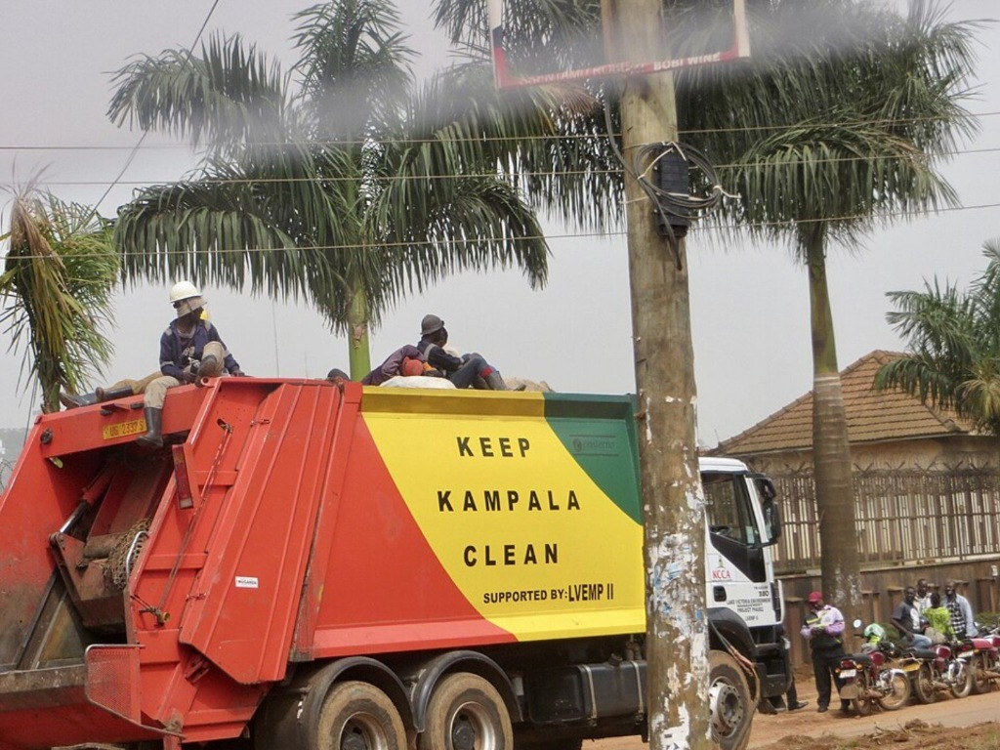
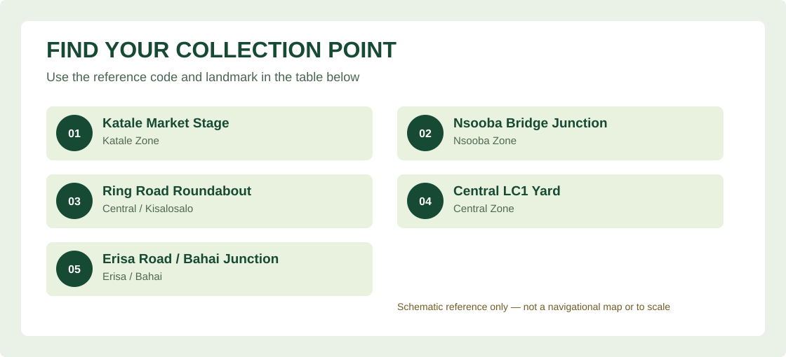

01 / How Collection Works
KCCA "Bring-to-Truck" System & Sorting
Kyebando operates under KCCA's bring-to-truck model. Garbage trucks do not collect loose heaps left overnight on roadsides; residents must store bagged waste inside their compound until the truck bell sounds or deliver it during the active staging window.
Separate organic and dry waste: Tie food peelings and kitchen scraps in a strong sack separate from dry plastics, bottles, and cardboard.
Listen for the truck bell or horn: Bring sealed bags directly to the compactor truck or designated staging point during your zone's window.
Pay official bag or monthly rates: Informal settlement 50-kg bags are charged Shs 1,000 per bag; standard household monthly subscriptions are confirmed with your zone collector.


02 / Zone Schedules
Confirmed Collection Days & Windows
Jump directly to your zone below to view collection days, arrival windows, and assigned KCCA/concessionaire trucks.
Katale Zone
Nsooba Zone
Central Zone
Kisalosalo Zone
Erisa Road / Bahai Slope
03 / Collection Points & Map
Verified Staging Points (CP-01 to CP-05)
Use only the five confirmed staging points mapped along Gayaza Road, Kyebando Ring Road, and Nsooba Road during active truck stop hours.

Need a street map? Open a general Kyebando map. The CP codes are not plotted at verified GPS coordinates.
| Point ID & Name | Nearest Landmark | Zone | Status |
|---|---|---|---|
| CP-01 · Katale Market Stage | East edge of Kyebando Katale Market off Gayaza Road | Katale Zone | Active Truck Stop (Tue & Fri, 06:30–09:30) |
| CP-02 · Nsooba Bridge Junction | North side of Nsooba Road Bridge near hardware shops | Nsooba Zone | Active Truck Stop (Mon & Thu, 07:00–10:00) |
| CP-03 · Ring Road Roundabout Bay | Kyebando Ring Road & Kisalosalo feeder junction | Central / Kisalosalo | Active Truck Stop (Wed & Sat, 07:00–10:00) |
| CP-04 · Central LC1 Yard | Opposite Kyebando Central Zone LC1 Office | Central Zone | Supervised Staging Point (Wed & Sat, 06:30–09:30) |
| CP-05 · Erisa Road / Bahai Junction | Lower slope corner on Erisa Road towards Bahai Hill | Erisa Rd / Bahai Slope | Scheduled Truck Stop (Thu, 08:00–11:00) |
04 / Late Truck & Rules Guide
What to Do If the Truck Misses Its Schedule
- Wait 60 minutes past the window: Traffic on Gayaza Road or Northern Bypass occasionally delays compactor arrivals.
- Do not leave bags unattended at the curb: Dogs and rain scatter uncollected rubbish into drainage channels. Take your bag back inside your gate.
- Report a missed pick-up immediately: Log the zone and missed day on our Report a Problem page or call your LC1 Sanitation Desk so the route supervisor can reschedule.
- Never dump into Nsooba Channel or road trenches: Blocking stormwater drains causes flooding and attracts KCCA enforcement fines.